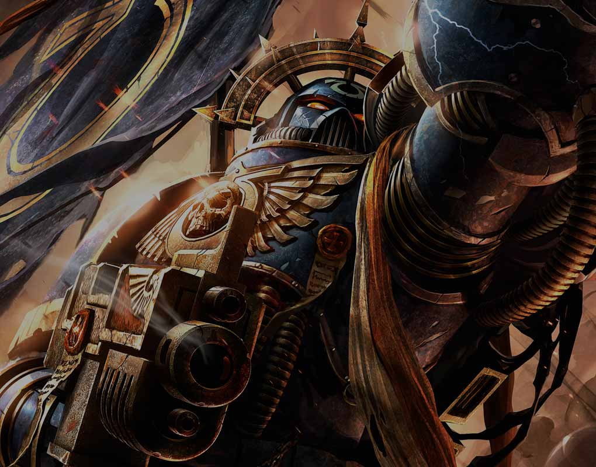
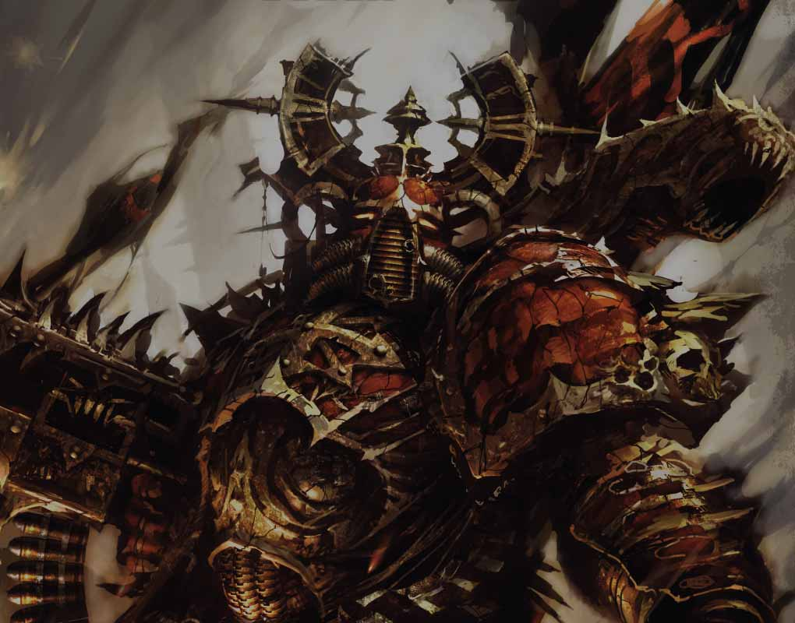
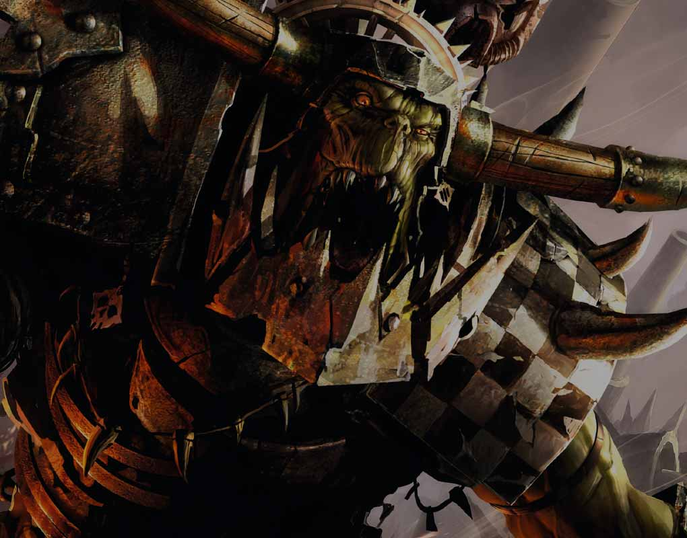
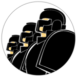

势力介绍
Introduce
-
01
帝国
Imperium
主要包括：
星际战士、星界军、审判庭等。超过一万年的持续战争已经磨练了人类的军事力量，因为银河系是一个充满敌意的地方，只有通过武力才能将帝国召集在一起。 这是一个战争时代，只有坚强和无情的人才能生存。 在众星之中，没有任何怜悯，没有软弱，也没有无休止的生存战争的喘息机会。
-
02
混沌势力
Chaos
主要包括：
邪教徒、混沌星际战士、恶魔等。作为混沌邪神的最青睐的战士，异教徒阿斯塔特有诸多能力。 他们或是拥有邪神赋予他们的不可思议的力量和耐力，或是可以通过可怕的变异武器将敌人生吞活剥。 各种各样的丑陋生物生活在次元，那里像是咆哮着的地狱维度，在那里所有生物被赋予了他们最可怕的形式。 骇人听闻的暴行或恶劣的仪式削弱了领域之间的界限，释放出一个让邪神进入实际空间的噩梦。 在这些可怕的强大邪神和邪神的王子 - 被授予邪能的凡人的带领下，和异教徒阿斯塔特和混沌的狂热的邪教组织一起展开了战斗。
-
03
非人种族
Xenos
主要包括：
艾达灵族、黑暗灵族、欧克兽族、钛族、太空死灵等。人类并不是唯一一个在星空中行走的种族。 自从他们在科技时代早期首次旅行于太阳系之外起，人类已经遭遇到了外星种族，其中大多数被证明是怀有敌意的。 虽然一些异形只存在于一个行星上，但其他文明可能占据一个恒星系统，并且有一些文明广泛分布在银河系的大空间中。 与外星人分享世界从来就不是人的本性，流血已经形成了帝国的基础。

来玩家画廊看看吧！
分享你的涂装
#PAINTWARHAMMER
联系我们
contact us
-
客服电话
+00 0000 0000
-
电子邮件
XXXX@XXX.XXX
-
邮件
XX省XX市XXXXXX
 -
访问经销商
-
留言
-
在线客服